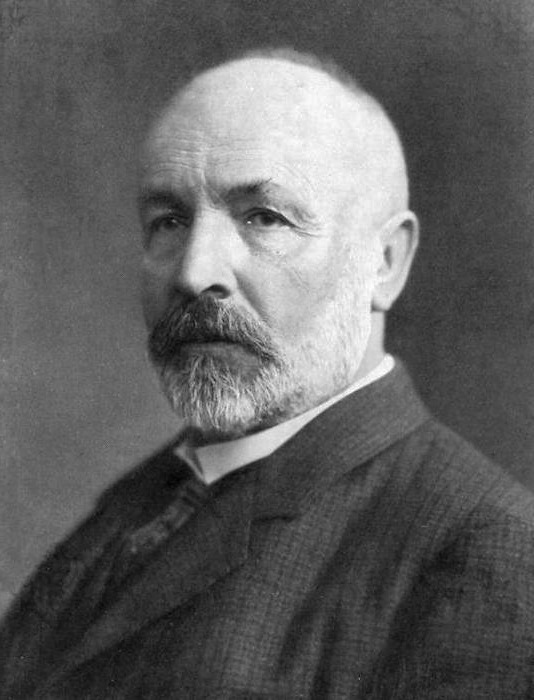
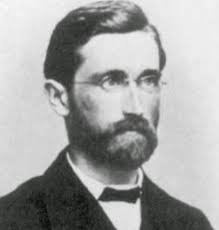

Conjuntos numéricos
O que são?
Conjuntos numéricos são grupos de números com características parecidas que podem ser usados para cálculos matemáticos. Existem vários tipos diferentes, como números inteiros, racionais, reais e complexos, cada um com suas próprias propriedades únicas.
Origem da teoria
A teoria dos conjuntos numéricos foi desenvolvida ao longo do século XIX por matemáticos como Georg Cantor, Richard Dedekind e Giuseppe Peano. A ideia principal por trás da teoria é classificar conjuntos de números em diferentes categorias, como inteiros, racionais, reais e complexos, e estabelecer relações entre essas categorias. O objetivo principal era fornecer uma base sólida para a análise matemática e outros ramos da matemática. A teoria dos conjuntos numéricos é amplamente utilizada em áreas como teoria dos números, teoria da computação e teoria da probabilidade.
 